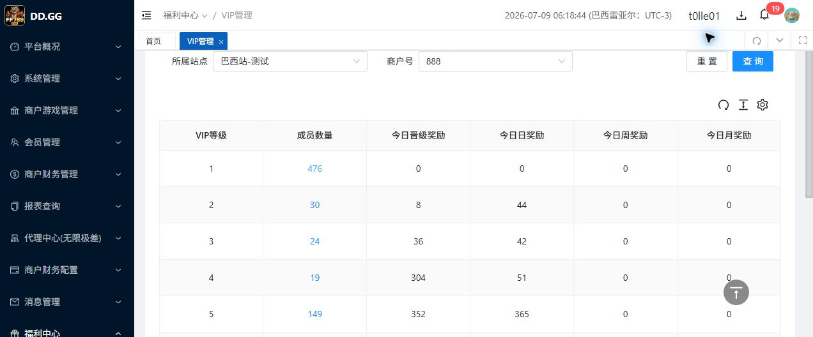
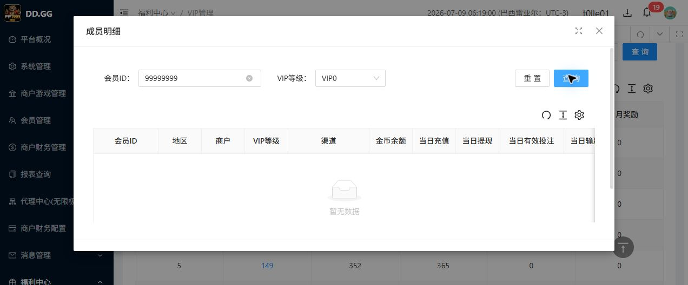
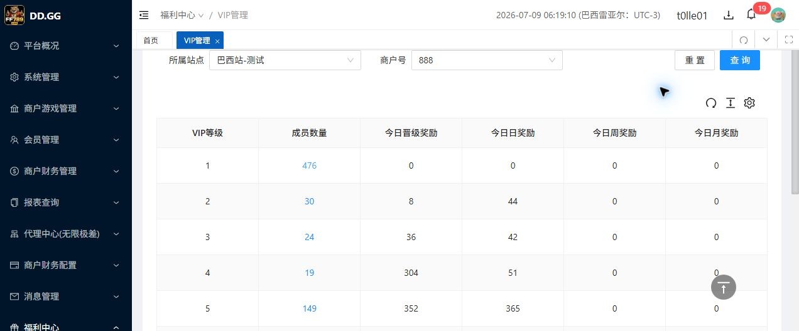

VIP管理增加查看会员Tab - BUG-IND-001 回归报告
执行日期：2026-07-09环境：http://site.bx-tytest.xyz账号：t0lle01路径：福利中心 / VIP管理 / 查看会员
结论
| 原问题 | BUG-IND-001：成员明细空数据查询后弹框无法关闭。 |
|---|---|
| 本次回归结论 | 未复现。空数据查询后，点击右上角可见 X 可关闭弹框；按 ESC 也可关闭弹框；关闭后返回查看会员列表。 |
| 处理建议 | 撤销有效 Bug，状态调整为“误报/未复现”。不需要开发修复，不进入待回归队列。 |
| 误报原因判断 | 本次观察到弹框右上角同时存在工具区与关闭 X。自动化如果点击关闭容器中心点，可能没有点到可见 X；结合用户手工验证可关闭，原结论更像测试操作命中点/瞬时网络状态导致，不作为产品缺陷。 |
回归步骤
| 步骤 | 实际结果 | 结论 |
|---|---|---|
进入后台，打开 #/member/level，切换到“查看会员”。 | 列表正常展示 VIP1-VIP12，VIP1 成员数量为 476。 | 通过 |
| 点击 VIP1 成员数量，打开成员明细弹框。 | 弹框正常打开，默认展示 VIP0/等级1成员明细，总数 476。 | 通过 |
在会员ID输入 99999999 后查询。 | 弹框内显示“暂无数据”，无报错、无页面跳转。 | 通过 |
| 点击右上角可见 X。 | 弹框关闭，页面回到查看会员列表。 | 通过 |
| 再次打开弹框并查询空数据，按 ESC。 | 弹框关闭，页面回到查看会员列表。 | 通过 |
证据
| 空数据弹框 |
|
|---|---|
| 点击 X 后 |
 |
| ESC 前 |
 |
| ESC 后 |
 |
更新后的状态
| BUG-IND-001 | 关闭：未复现 / 自动化误报倾向。 |
|---|---|
| 当前需求状态 | 通过。当前没有有效待修复 Bug。 |
| 残余风险 | 本次只覆盖当前账号、当前站点、VIP1、会员ID空数据查询、X关闭和ESC关闭。未覆盖其他角色权限、其他站点商户、导出/保存等非只读操作。 |